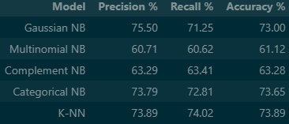

LEGO Set Rating Prediction (Naïve Bayes)
Binary Classification · Probabilistic Modeling · Naïve Bayes · Supervised Learning

Python
Pandas
scikit-learn
Naïve Bayes
Classification
EDA
Built and evaluated Naïve Bayes classification models to predict whether a LEGO set would receive
a customer rating of 4 stars or higher based on product attributes.
GitHub Repo
Problem Statement
LEGO sets vary widely in theme, complexity, price, and target audience. Understanding which attributes
are associated with highly rated sets can help inform product design, pricing strategy, and consumer analysis.
The goal of this project was to apply probabilistic classification techniques to predict high-rating outcomes
and interpret how individual features contribute to customer satisfaction.
Data
The dataset consisted of structured LEGO set metadata and customer rating information.
- Features included: piece count, price, theme/category, release year, and related attributes
- Target variable: binary label indicating whether a set received ≥ 4 stars
- Data required cleaning, encoding of categorical features, and validation
Approach
I implemented a supervised learning workflow grounded in conditional probability and Bayes’ Theorem.
- Exploratory analysis to understand feature distributions and class balance
- Feature preprocessing and encoding for probabilistic modeling
- Training Naïve Bayes classifiers to estimate class probabilities
- Evaluating performance on unseen data using standard classification metrics
Modeling
Naïve Bayes was selected due to its interpretability and strong performance on structured, categorical-heavy data.
Model Type
Naïve Bayes (supervised classification)
Target
4-star-plus rating (binary outcome)
Focus
Probability estimation and interpretability
Results & Observations
- Successfully predicted high-rating LEGO sets with meaningful accuracy
- Identified product attributes that most strongly influenced rating outcomes
- Demonstrated how probabilistic models can translate theory into practical prediction tasks
Challenges & Limitations
- Naïve independence assumptions may oversimplify feature interactions
- Ratings may be influenced by subjective or external factors not captured in metadata
- Binary framing ignores nuanced differences between mid-range ratings
Extensions & Future Work
- Compare Naïve Bayes against tree-based or ensemble classifiers
- Extend to multi-class rating prediction
- Incorporate text reviews using NLP for richer signals
- Calibrate probabilities to support product or pricing decisions
Key Takeaways
This project reinforced my understanding of probabilistic modeling and how classical machine learning
techniques can be applied effectively to real-world prediction problems. It also strengthened my ability
to communicate model assumptions, limitations, and insights clearly.